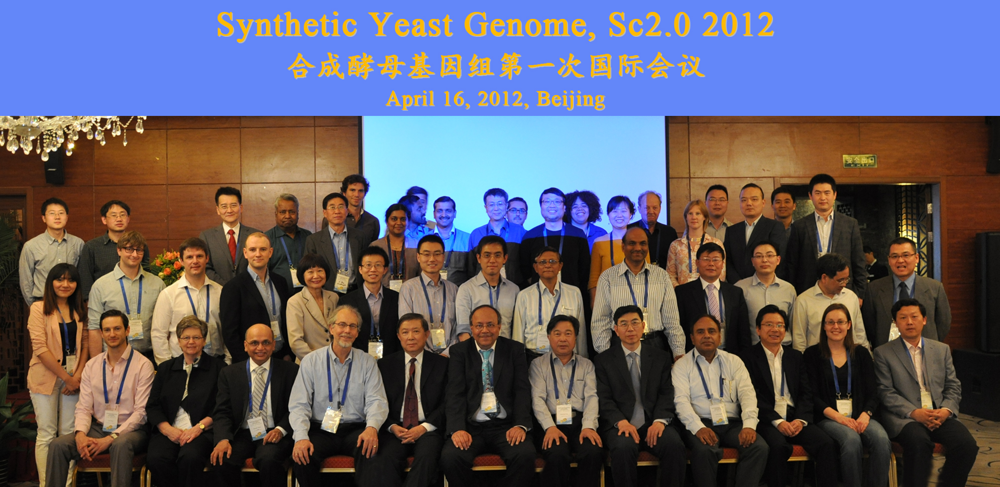

The first international meeting on Synthetic Yeast Genome, Sc2.0 project participants:
Funders: NSF (USA); MoST (China); NSFC (China); BBSRC (UK); Council of Scientific and Industrial Research (India); Hong Kong Research Grants Council
Academia: Johns Hopkins University (USA); BGI, Tianjin University, Tsinghua University (China); Imperial College London, The University of Edinburgh (UK); Institute of Genomics and Integrative Biology, Pondicherry University (India); Hong Kong University, Hong Kong University of Science and Technology, Chinese University of Hong Kong (Hong Kong); Institut Pasteur (France); Catholic U Louvain la Neuve (Belgium)
April 17, 2012, China – The international coordination meeting on the synthetic yeast project (Sc2.0 PROJECT), co-organized by Johns Hopkins University (JHU), BGI and Tsinghua University with the support of National Science Foundation (NSF), was held at the Wenjin Hotel, Beijing, China. This was the first international research coordination meeting on the synthetic yeast project aiming to develop new technological strategies and effective approaches to promote further research on this project as well as to boost the development of synthetic biology.
The meeting was attended by over 40 officials and experts from governments, outstanding scientific research institutes and colleges, including Ministry of Science and Technology, China, The National Science Foundation of China, The National Science Foundation (NSF), U.S.A., Biotechnology and Biological Sciences Research Council (BBSRC), United Kingdom, Council of Scientific and Industrial Research, India, Tianjin University, China, Hong Kong University, China, among others. At this meeting, Johns Hopkins University and The Centre for Synthetic Biology and Innovation (CSynBI) at Imperial College London signed a collaborative research agreement for their role in the Sc2.0 PROJECT. Imperial College will initiate the complete synthesis of yeast chromosome 11, bringing genome-scale synthetic biology to the UK for the first time.
Synthetic biology is a new emerging discipline, which is motivated by advances in molecular cell sciences, systems biology and the advent of two foundational technologies, DNA sequencing and DNA synthesis. The purpose of synthetic biology is to design synthetic biological systems by utilizing systematically engineered micro-organisms for the production of biofuels and drugs, providing a unique opportunity for researchers to study many profound life science questions and generate vital industrial applications.
The Sc2.0 PROJECT, initiated by Johns Hopkins University School of Medicine, is the first synthetic eukaryotic cell genome project. As one of the principal investigators of the project, Dr. Jef Boeke, Director of the High Throughput Biology Center, Johns Hopkins University School of Medicine, delivered a detailed presentation on the overview of the project and its profound impact in the field of synthetic biology. He said, “This meeting provides an opportunity for further boosting the research and applications of the Sc2.0 PROJECT. With the achievements of this project, I believe that we can seek much better solutions to face the challenges of the future, such as world energy shortage.”
After that, experts in different organizations, combining experimental studies with the prospective for synthetic biology, gave excellent presentations and participated in active discussions. Professor Guanhua Xu, Chairman of Advisory Group on The Fifth Major Project of Chinese National Programs for Fundamental Research and Development (973 Program), stated, “The accomplishment of Sc2.0 project will serve as a landmark for important milestones in the development of synthetic biology.”
Professor Huanming Yang, Chairman of BGI, said, “The rapid development of high-throughput sequencing technologies have led to a revolution in OMIC-related areas, which also greatly facilitates the studies on synthetic biology. With solidarity and international cooperation, I believe we will be able to explore more opportunities for valuable research in human disease and biomedical areas.”


{kind=link}
{kind=link}
{kind=link}